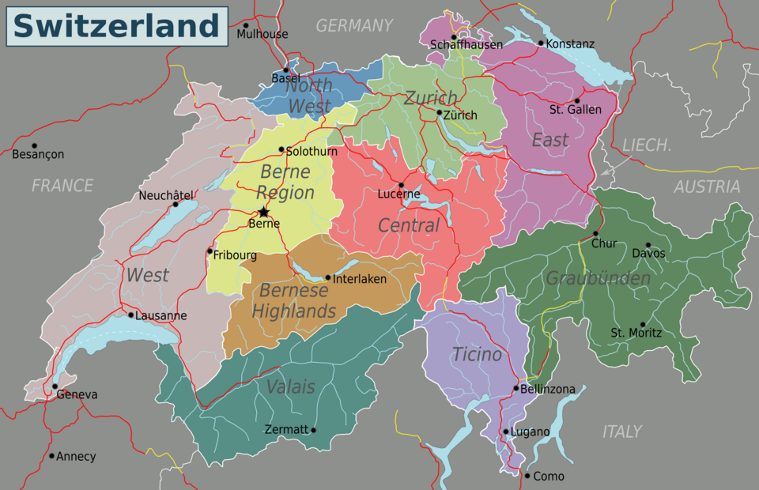

Switzerland,[d] officially the Swiss Confederation,[e] is a landlocked country located in west-central Europe.[f][13] It is bordered by Italy to the south, France to the west, Germany to the north, and Austria and Liechtenstein to the east. Switzerland is geographically divided among the Swiss Plateau, the Alps and the Jura; the Alps occupy the greater part of the territory, whereas most of the country's 9 million people are concentrated on the plateau, which hosts its largest cities and economic centres, including Zurich, Geneva, and Lausanne.[14] Switzerland is a federal republic composed of 26 cantons, with federal authorities based in Bern.[a][2][1] It has four main linguistic and cultural regions: German, French, Italian and Romansh. Although most Swiss are German-speaking, national identity is fairly cohesive, being rooted in a common historical background, shared values such as federalism and direct democracy,[15] and Alpine symbolism.[16][17] Swiss identity transcends language, ethnicity, and religion, leading to Switzerland being described as a Willensnation ("nation of volition") rather than a nation state.[18]
